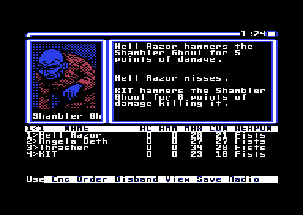

<meta charset="utf-8">
<meta name="viewport" content="width=device-width, initial-scale=1">
<title>{{title}}</title>
<link rel="preconnect" href="https://fonts.googleapis.com">
<link rel="stylesheet" href="https://fonts.googleapis.com/css2?family=Lato:wght@400;700;900&family=IBM+Plex+Mono:wght@400;500&display=swap">
<link rel="stylesheet" href="reference/wasteland-page.css">
<!-- tabs -->
<header class="hero">
  <p class="eyebrow">{{platform}} · {{year}} · {{publisher}}</p>
  <h1>{{title}}</h1>
  <p class="sub">A Ranger who is down <a href="#wl-down">cannot be hurt by any monster</a>, and a party left behind <a href="#wl-heal">heals twice as fast</a> as the party being led. Every check and every shot comes down to two dice that are thrown again on a double, and Wasteland’s dice <a href="discoveries.html#wl-doubles">come up doubles one throw in five</a>.</p>
</header>
<main class="wrap">
<section id="wl-down" data-part="game">
  <p class="fig">01 · Rangers who are down</p>
  <h2 class="t">Secret: a Ranger who is down cannot be hurt by any monster</h2>
  <p class="lede">A Ranger whose CON has fallen to 0 or below is out of every monster's reach. A shot that lands on a Ranger who is down is turned into a miss, and a monster that fights hand to hand only picks Rangers who are on their feet. Bleeding, disease, and the ground can still kill a fallen Ranger.</p>

  <div class="plate wl-fi" id="wl-fi-down">
    <div class="wl-fi-grid">
      <div class="wl-fi-side">
        <p class="wl-fi-h">The party</p>
        <div class="wl-fi-roster">
          <button type="button" class="wl-fi-who" aria-pressed="true"><b>Hell Razor</b><span></span></button>
          <button type="button" class="wl-fi-who" aria-pressed="true"><b>Angela Deth</b><span></span></button>
          <button type="button" class="wl-fi-who" aria-pressed="false"><b>Thrasher</b><span></span></button>
          <button type="button" class="wl-fi-who" aria-pressed="false"><b>KIT</b><span></span></button>
        </div>
        <p class="wl-fi-h">Against</p>
        <p class="wl-fi-foes">Six Guardians with guns, 10 and 14 feet away.</p>
      </div>
      <div class="wl-fi-log" role="log" aria-label="The game's text for the round"><p class="wl-fi-dim">The game's text for the round appears here.</p></div>
    </div>
    <div class="wl-xp-bar">
      <button type="button" class="wl-xp-btn" data-rounds="1">Fight a round</button>
      <button type="button" class="wl-xp-btn wl-xp-ghost" data-rounds="50">Fight 50 rounds</button>
      <p class="wl-xp-say wl-fi-tally" role="status"></p>
    </div>
    <p class="cap">A room in the Guardian Citadel's Outer Sanctum where six Guardians with guns wait (encounters 17 and 18 of map 36), with four Rangers on the square beside them. Press a Ranger to put them down or stand them up. Fight a round runs the game's own round from its code (<code>$B867</code>), with random bytes from this browser where the C64 reads its raster line and a timer. Every press starts from the same state. The Rangers on their feet evade, and have 250 CON each so that they last. In 400 such rounds with Hell Razor and Angela Deth down, 1,847 blows were aimed at those two and cost them no CON, and 1,864 were aimed at the other two and cost them 73,640.</p>
  </div>

  <p>When a monster's shot is on target, the game picks one of the party at random to take it, and a Ranger who is down can be picked (<code>$9DEC</code>). The routine that hands out the damage then looks at the victim. If the victim is already down and the attacker's weapon is a gun, the routine prints the Ranger's name and <q>but misses.</q>, and leaves the CON alone (<code>$A889-$A8AD</code>).</p>

  <p>The same routine has a rule for a claw or a club landing on a Ranger who is down: two dice, thrown again on a double, have to come in under the monster's number of damage dice (<code>$A899</code>). That rule never runs. A monster in melee picks its victim from the Rangers still on their feet, and makes no attack when there are none (<code>$81B7</code>). In the emulator, two Mutants on the world map fought twelve rounds against a party with one Ranger unconscious, and all 25 of their blows went to Rangers on their feet.</p>

  <p>So an unconscious Ranger is the safest member of the party. From −1 to −10 CON a Ranger gets a point back after every round, and wakes with half the CON they had before the blow (<code>$B7BA-$B7DB</code>). From −11 down the Ranger loses a point after every round and dies below −50 (<code>$B842</code>). That count is the only danger in a fight, and a monster can do nothing to hurry it.</p>
</section>

<section id="wl-patrol" data-part="game">
  <p class="fig">02 · The patrols under the Temple of Blood</p>
  <h2 class="t">Bug: the Guards under the Temple of Blood cannot fire while one of their Bloodbeasts is alive</h2>
  <p class="lede">Ten patrols guard the tunnels under the Temple of Blood, each made of Guards with guns and Bloodbeasts. As long as one Bloodbeast of a patrol is alive, its Guards never fire. They start to shoot in the round after the last Bloodbeast dies.</p>

  <div class="plate wl-fi" id="wl-fi-patrol">
    <div class="wl-fi-opts">
      <span class="wl-fi-lab">The Rangers</span>
      <div class="wl-dice-seg wl-fi-seg" role="group" aria-label="The Rangers' orders">
        <button type="button" class="wl-dice-segb" data-aim="beasts" aria-pressed="true">attack the Bloodbeasts</button>
        <button type="button" class="wl-dice-segb" data-aim="evade" aria-pressed="false">evade</button>
      </div>
      <label class="wl-fi-check"><input type="checkbox" id="wl-fi-patrol-past"> Send a line without guns to the next line, as an empty line is sent</label>
    </div>
    <div class="wl-fi-grid">
      <div class="wl-fi-side">
        <p class="wl-fi-h">The patrol before this round</p>
        <p class="wl-fi-foes" id="wl-fi-patrol-foes">Guards and Bloodbeasts, 14 feet away.</p>
        <p class="wl-fi-h">The party's CON</p>
        <p class="wl-fi-foes" id="wl-fi-patrol-con">60, 60, 60, 60</p>
      </div>
      <div class="wl-fi-log" role="log" aria-label="The game's text for the round"><p class="wl-fi-dim">The game's text for the round appears here.</p></div>
    </div>
    <div class="wl-xp-bar">
      <button type="button" class="wl-xp-btn" data-rounds="1">Fight a round</button>
      <button type="button" class="wl-xp-btn wl-xp-ghost" data-rounds="50">Fight 50 rounds</button>
      <p class="wl-xp-say wl-fi-tally" role="status"></p>
    </div>
    <p class="cap">One patrol (encounter 19 of map 28) with four Rangers of 60 CON on the square beside it, 14 feet away. The fight runs on the game's own code from round to round, and a new patrol comes when it ends. The switch moves one branch (<code>$9CAC</code>) so that a line without guns goes where an empty line goes (<code>$9DB9</code>). Over 30 patrols of up to 14 rounds with the Rangers attacking, the Guards fired no shot in the 217 rounds a Bloodbeast was alive and 126 shots in the 125 rounds after. With the Rangers evading, they fired 516 shots in 384 rounds with the switch on, and none in 407 rounds with the switch off.</p>
  </div>

  <p>When the monsters shoot, the game goes through a group's three lines from the last to the first (<code>$9C65</code>). An empty line is skipped: the code jumps on to the next line (<code>$9CA0</code>). A line of monsters without guns takes a different jump, to the end of the whole group (<code>$9CAE</code>), which is where a peaceful group is sent. Every line still to come is passed over with it.</p>

  <p>A patrol's record lists the Guards first and the Bloodbeasts second, so the Bloodbeasts are looked at first and close the patrol's turn before the Guards are reached. The order in the record is all that decides it. With the two lines swapped in the record, the same patrols fired 616 shots in 420 rounds.</p>

  <p>One encounter outside the tunnels is laid out the same way. In the Guardian Citadel's Outer Sanctum, Master Ciro and Adept Kate carry guns in the first two lines of their group, and Brother Nuris fights hand to hand in the third. While Brother Nuris lives, neither of the other two fires. These eleven are the only ones among the 583 encounters with fixed monsters that list a gun before a monster without one.</p>
</section>

<section id="wl-nerve" data-part="game">
  <p class="fig">03 · Running away</p>
  <h2 class="t">Bug: a lone gunman runs away easily, and a line of ten gunmen never runs</h2>
  <p class="lede">Before each round, a line of monsters with guns weighs itself against the party and runs if it is the weaker. The code sets out to make the test depend on the kind of monster. Through a slip it depends on how many of them there are, and every extra monster in the line halves the CON the party is credited with.</p>

  <div class="plate wl-fi" id="wl-fi-nerve">
    <div class="wl-fi-opts">
      <label class="wl-fi-lab" for="wl-fi-nerve-con">CON of each Ranger</label>
      <input type="range" class="wl-fi-range" id="wl-fi-nerve-con" min="10" max="250" step="2" value="60">
      <output class="wl-fi-out" id="wl-fi-nerve-con-o" for="wl-fi-nerve-con">60</output>
    </div>
    <div class="wl-fi-grid">
      <div class="wl-fi-side">
        <p class="wl-fi-h">At this CON</p>
        <p class="wl-fi-foes" id="wl-fi-nerve-rule"></p>
      </div>
      <div class="wl-fi-log" role="log" aria-label="The patrol that was met"><p class="wl-fi-dim">The patrol that was met appears here.</p></div>
    </div>
    <div class="wl-xp-bar">
      <button type="button" class="wl-xp-btn" data-rounds="1">Meet a patrol</button>
      <button type="button" class="wl-xp-btn wl-xp-ghost" data-rounds="100">Meet 100 patrols</button>
      <p class="wl-xp-say wl-fi-tally" role="status"></p>
    </div>
    <p class="cap">The patrol of the section above, met again and again by four Rangers with the CON set here. The game's own code places the patrol, rolls its hit points, and plans its move (<code>$936E</code>, <code>$83D7</code>). In 420 meetings at seven levels of CON from 20 to 250, every plan followed the count of the Guards: a lone Guard ran when his hit points were under half the party's average CON, and a pair when their average was under a quarter of it.</p>
  </div>

  <p>The test compares the line's average hit points with the party's average CON (<code>$869F</code>). The party's figure is to be halved first for cyborgs and halved twice for animals, mutants, and humanoids. Robots skip the test and never run (<code>$847F-$849E</code>).</p>

  <p>The number of halvings waits in a spare byte while the two averages are worked out. The routine that averages the hit points uses the same byte, and leaves the number of monsters in the line there (<code>$8719</code>). When the halvings are read back (<code>$86A8</code>), the count of monsters comes out in their place.</p>

  <div class="plate wl-fi-after">
    <div class="wl-un-tw"><table class="wl-un-t">
      <thead><tr><th>Monsters alive in the line</th><th>The party's average CON is divided by</th><th>The code sets out to divide by</th></tr></thead>
      <tbody>
        <tr><td>1</td><td>2</td><td rowspan="5">2 for cyborgs, 4 for animals, mutants, and humanoids</td></tr>
        <tr><td>2</td><td>4</td></tr>
        <tr><td>3</td><td>8</td></tr>
        <tr><td>4</td><td>16</td></tr>
        <tr class="wl-un-hit"><td>10</td><td>1,024</td></tr>
      </tbody>
    </table></div>
    <p class="cap">The line runs when its average hit points are below the party's average CON after the division. Ten halvings leave 0 of any CON under 1,024, so a full line of ten never runs from a party a player is likely to have.</p>
  </div>

  <p>A lone Guard is a humanoid, so the party's CON should be quartered for him and is only halved: he runs from a party half as tough as the one he was meant to run from. Two Guards get the quartering by chance. The count is of the monsters still alive, so the survivors of a line that is being shot down grow more willing to run.</p>

  <p>The whole group follows its first line. When the Guards run, their Bloodbeasts go with them, and a group that is on the move makes no attack that round (<code>$83D7</code>).</p>
</section>

<section id="wl-heal" data-part="game">
  <p class="fig">04 · Healing</p>
  <h2 class="t">Secret: a party left behind heals twice as fast as the party you lead</h2>
  <p class="lede">CON comes back with time, a point at a time. A wounded Ranger in the party being led gets a point every 128 ticks of the game's clock, and a Ranger in any other party gets one every 64. Leaving the wounded where they stand and walking the others about heals them at double speed.</p>

  <div class="plate wl-fi" id="wl-fi-heal">
    <div class="wl-fi-opts">
      <label class="wl-fi-lab" for="wl-fi-heal-case">The Ranger</label>
      <select class="wl-fi-sel" id="wl-fi-heal-case">
        <option value="hurt">is on their feet with 6 CON of 30</option>
        <option value="unc">is unconscious at −5, felled from 20 CON</option>
        <option value="crt">is critically wounded at −25</option>
        <option value="rad">has 6 CON of 30 and has stood in radiation</option>
      </select>
      <label class="wl-fi-lab" for="wl-fi-heal-map">The walking is done</label>
      <select class="wl-fi-sel" id="wl-fi-heal-map">
        <option value="0">on the world map (4 minutes a step)</option>
        <option value="16">outside Base Cochise (30 seconds a step)</option>
        <option value="36">in the Guardian Citadel's Outer Sanctum (15 seconds a step)</option>
      </select>
    </div>
    <div class="wl-un-tw"><table class="wl-un-t wl-fi-t" id="wl-fi-heal-t">
      <thead><tr><th>Steps walked</th><th>0</th><th>8</th><th>16</th><th>24</th><th>32</th><th>40</th><th>48</th><th>56</th><th>64</th></tr></thead>
      <tbody><tr><td>In the party you lead</td><td>6</td><td>7</td><td>8</td><td>9</td><td>10</td><td>11</td><td>12</td><td>13</td><td>14</td></tr><tr><td>In a party left behind</td><td>6</td><td>8</td><td>10</td><td>12</td><td>14</td><td>16</td><td>18</td><td>20</td><td>22</td></tr></tbody>
    </table></div>
    <div class="wl-xp-bar">
      <button type="button" class="wl-xp-btn" id="wl-fi-heal-go">Walk</button>
      <p class="wl-xp-say wl-fi-tally" role="status">Walk runs the game's own clock for each step and fills the table with the Ranger's CON after it.</p>
    </div>
    <p class="cap">One Ranger with 30 MAXCON, once as a member of the party that walks and once as a member of a party left elsewhere. Each step runs the game's clock routine on the map chosen (<code>$AF32</code>), which runs the health routine whenever it is due (<code>$B795</code>).</p>
  </div>

  <p>The clock that counts is a byte that goes up with every step, by an amount the map sets: 16 on the world map, 2 in a town such as Quartz, and 1 inside most buildings (<code>$AF32</code>). Each time the byte comes to a multiple of 16 the game looks at every Ranger in every party (<code>$B795</code>). A Ranger who is hurt and on their feet gets a point when the lowest six bits of the byte are all 0, which is every 64 ticks. For a Ranger in the party being led the test takes seven bits, which is every 128 (<code>$B7FD-$B810</code>).</p>

  <p>On the world map that is a point every four steps for a party left behind and a point every eight for the party that walks. In the emulator, 64 steps on the world map took a party left behind from 6 CON to 22 and the walkers from 5 to 13.</p>

  <p>A Ranger who is down does not wait for those ticks. An unconscious Ranger, from −1 to −10, gets a point every time the game looks, in whichever party, and a Ranger who is worse off loses one. The game looks at every step on the world map, so a Ranger at −25 is dead 26 steps later. Inside the Citadel it looks every 16 steps, and the same Ranger lasts 416. It also looks after every round of a fight.</p>

  <p>None of the healing reaches a Ranger who has stood in <a href="discoveries.html#wl-radiation">radiation</a>. A mark in the Ranger's record stops every point coming back, awake or unconscious, until a doctor clears it (<code>$B854</code>).</p>
</section>

<section id="wl-chopter" data-part="game">
  <p class="fig">05 · The Chopter</p>
  <h2 class="t">Bug: fists, knives, and chainsaws can never hit the Chopters outside Base Cochise</h2>
  <p class="lede">The Chopters that guard the outside of Base Cochise cannot be struck in melee. Every blow with a fist or a hand weapon misses them, whatever the Ranger's Brawling and AGL. Guns hit them as they hit anything else.</p>

  <div class="plate wl-fi" id="wl-fi-chopter">
    <div class="wl-fi-opts">
      <span class="wl-fi-lab">The Rangers strike at</span>
      <div class="wl-dice-seg wl-fi-seg" role="group" aria-label="The line the Rangers strike at">
        <button type="button" class="wl-dice-segb" data-line="0" aria-pressed="true">the Chopters</button>
        <button type="button" class="wl-dice-segb" data-line="1" aria-pressed="false">the VTOL Auto-fire Robots</button>
      </div>
    </div>
    <div class="wl-fi-log wl-fi-log-wide" role="log" aria-label="The game's text for the round"><p class="wl-fi-dim">The game's text for the round appears here.</p></div>
    <div class="wl-xp-bar">
      <button type="button" class="wl-xp-btn" data-rounds="1">Fight a round</button>
      <button type="button" class="wl-xp-btn wl-xp-ghost" data-rounds="50">Fight 50 rounds</button>
      <p class="wl-xp-say wl-fi-tally" role="status"></p>
    </div>
    <p class="cap">Chopters and VTOL Auto-fire Robots in one group outside Base Cochise (encounter 11 of map 16), 10 feet from four Rangers who fight with their fists and have 900 CON each so that they last. The round is the game's own, and every press starts from the same state. In 300 rounds the Rangers struck 1,800 blows at the Chopters and landed none. In 300 more they struck 1,800 at the robots beside them and landed 573.</p>
  </div>

  <p>A blow lands when a throw from 1 to 100 comes in under the Ranger's chance. The chance starts at 50, or at 60 when the monster's group is on the move, and gains 4 for each level of Brawling and a bonus for AGL (<code>$8256</code>). The monster's skill byte is then taken off. For a monster that carries a gun, the code first adds 5.</p>

  <p>The Chopter's skill byte is 0, the only 0 among the 398 monster records in the maps. To take the byte off, the code turns it into a negative number of 16 bits, and it gets 0 wrong: the low half stays 0 and the high half is set to <code>$FF</code> regardless, which makes −256 (<code>$828A-$8292</code>). The chance falls far below 0 and is held at 0.</p>

  <p>The same byte is the Chopter's aim, added to its dice when it fires (<code>$9C65</code>). The other machines with guns outside the base have 30 or 40 there. So the worst shot on the map is the one enemy a chainsaw cannot touch. The Chopters of Las Vegas are a different record, with a skill of 2 and no gun, and a blow can land on them.</p>
</section>

<section id="wl-lock" data-part="game">
  <p class="fig">06 · A round that never ends</p>
  <h2 class="t">Bug: a single shot that kills the last Ranger outright can freeze the game</h2>
  <p class="lede">When one shot takes the last living Ranger from their feet to dead, and another monster's shot is on target in the same volley, the game looks for somebody alive to take the second shot and never stops looking. The text stops in the middle of a sentence and the game stops answering the keys.</p>

  <div class="plate wl-fi" id="wl-fi-lock">
    <div class="wl-fi-log wl-fi-log-wide" role="log" aria-label="The game's text for the round"><p class="wl-fi-dim">The game's text for the round appears here.</p></div>
    <div class="wl-xp-bar">
      <button type="button" class="wl-xp-btn" data-rounds="1" data-opt="361">Fight the round that freezes</button>
      <button type="button" class="wl-xp-btn wl-xp-ghost" data-rounds="1">Fight another round</button>
      <button type="button" class="wl-xp-btn wl-xp-ghost" data-rounds="200">Fight 200 rounds</button>
      <p class="wl-xp-say wl-fi-tally" role="status"></p>
    </div>
    <p class="cap">The Outer Sanctum's room again, with one Ranger left at 1 CON, evading, in front of Master Paz, Brother Jackson, and Brother Nobel (encounter 18 of map 36; the room's other group is already wiped out). The first button plays a round with a fixed run of random bytes, one of three in 3,000 that froze. The others use this browser's random bytes. A round is called frozen here when the game's code has run 1,500,000 instructions without ending it, five times what a round takes.</p>
  </div>

  <p>A monster's shot that is on target picks a Ranger at random. If that Ranger is dead it picks again, and it goes on picking until it finds one alive (<code>$9DFD-$9E26</code>). The game checks that somebody is alive before the monsters start to fire, and again after each burst or spray, but not after a single shot (<code>$9C65</code>).</p>

  <p>A blow kills outright when it takes a Ranger to −50 or below, so the shot has to do the Ranger's CON and 50 more. Five monsters with single-shot guns roll enough dice for that: the Barkeep of Spade's Casino, and Brother Jackson, Brother Nobel, Redhawk, and Sister Faith in the Outer Sanctum. The Barkeep fights alone in his encounter, so no second shot follows his. The room staged above has two of the others side by side.</p>

  <p>The other Rangers must be dead for this, not merely down: a Ranger who is down counts as alive, takes the shot, and <a href="#wl-down">comes to no harm</a>.</p>
</section>

<section id="wl-round" data-part="game">
  <p class="fig">07 · The round</p>
  <h2 class="t">A round is fought in four passes, and every gun fires before any blade</h2>
  <p class="lede">Orders are taken for the whole party, and then the round runs in a fixed order: the Rangers' guns, the monsters' guns, the melee, and everything else. Speed decides who goes first only inside the melee.</p>

  <div class="plate wl-fi-after">
    <div class="wl-un-tw"><table class="wl-un-t wl-fi-passes">
      <thead><tr><th>Pass</th><th>Who acts</th><th>In what order</th></tr></thead>
      <tbody>
        <tr><td>The Rangers' guns <code>$9F70</code></td><td>Every Ranger on their feet with the Attack order and a loaded gun</td><td>Down the roster</td></tr>
        <tr><td>The monsters' guns <code>$9C65</code></td><td>Every monster with a gun, once</td><td>Groups from the last to the first, and lines from the last to the first</td></tr>
        <tr><td>The melee <code>$7F64</code></td><td>Rangers with the Attack order and a hand weapon or an empty gun, and monsters without guns in a group within 15 feet</td><td>Highest initiative first</td></tr>
        <tr><td>Other orders <code>$9EFD</code></td><td>Hire, Weapon, Evade, Load, and Use</td><td>Down the roster</td></tr>
      </tbody>
    </table></div>
    <p class="cap">The four passes of a battle round (<code>$B867</code>). Rangers who run and parties that move go after the fourth pass (<code>$A276</code>), then the monsters' groups make their moves (<code>$872D</code>), and the clock and the health routine run once.</p>
  </div>

  <p>In the melee, a Ranger's initiative is two dice plus SP plus 4 for each level of Brawling, and a monster's is two dice plus 8 times its skill byte (<code>$7F64</code>). The highest goes first, and a tie goes to the Ranger (<code>$8057</code>). On their turn a Ranger strikes once, and once more for every two levels of Brawling. A monster attacks as many times as its skill byte.</p>

  <p>That one byte of a monster's record does four jobs. It is added to the monster's dice when it shoots, it is the number of its attacks in melee, it sets its initiative, and it comes off a Ranger's chance to hit the monster or to avoid its blow, four times over when the monster has a melee weapon (<code>$8256</code>).</p>

  <p>A Ranger's order changes how hard they are to hit in melee. The chance to avoid a monster's blow starts at 60 for a Ranger who is evading, 50 for one who is attacking, and 40 for anyone else, such as a Ranger who is loading a gun or using an item (<code>$8177</code>). Evading also escapes any shot that would have hit by a margin under 6 (<code>$9DEC</code>).</p>
</section>

<section id="wl-dice" data-part="">
<p class="fig">08 · Checks and shots</p>
<h2 class="t">Two dice that keep rolling</h2>

<p class="lede" data-part="engine">Every skill check, attribute check, and party member's shot comes down to one throw: two six-sided dice, added up, and thrown again whenever they match. The repeats add on, so a pair of sixes followed by a 3 and a 4 makes 19 (<code>$0845</code>). Each repeat is a one-in-six chance, so high totals are rare but possible.</p>

<p data-part="engine">A check has a target of 15 + 5 × its difficulty (<code>$0867</code>). For a skill check, the throw plus the attribute that goes with the skill plus 4 for each level of the skill must reach it (<code>$0C6A</code>). The table at <code>$0DD8</code> pairs each skill with its attribute, such as Climb with AGL, Picklock with DEX, and Medic with IQ. An attribute check adds the attribute alone (<code>$0D0A</code>). A throw under 5 fails whatever the bonus, which is one throw in nine.</p>

<p data-part="">Every throw of 5 or more is added to the character's experience, pass or fail (<code data-part="engine">$0C41</code>). A pass can also raise the skill a level, but only while the level is below the character's rank and below the difficulty. Then a d10 no higher than half of (difficulty − level), rounded down, plus 1 raises it (<code data-part="engine">$0CA2</code>). A new character has rank 1 (<code data-part="ranger">$7FDD</code>), so no skill improves by use before the first promotion.</p>

<p data-part="">Players levelled whole parties on this rule. On the <a href="https://wastelandrangerhq.github.io/hq-grid/underground.html#gambling">Wasteland Ranger HQ-Grid's Underground</a>, D. Sinner (4 May 1998) played the Desert Nomads' slot machine and then three card monty in Las Vegas, reckoned on about ten levels from a session, and guessed <q>that you get one xp for every $ you make</q>. The money plays no part. A pull of the slot machine tests the player's Gamble and LK by turns, up to ten times and hardest first, until one passes (<span data-part="map-08"><code>$3B9C</code></span>), and a hand of monty tests LK and Gamble (<span data-part="map-41"><code>$3BC9</code></span>). The experience is the dice of each of those throws that came to 5 or more, won or lost.</p>

<div class="plate" id="wl-dice-checks" data-part="engine">
  <div class="wl-dice-seg" id="wl-dice-c-kind" role="group" aria-label="Kind of check">
    <button type="button" class="wl-dice-segb" data-kind="skill" aria-pressed="true">Skill check</button>
    <button type="button" class="wl-dice-segb" data-kind="attr" aria-pressed="false">Attribute check</button>
  </div>
  <div class="wl-dice-grid">
    <div class="wl-dice-ctl">
      <label class="wl-dice-k-skill" for="wl-dice-c-skill">Skill</label>
      <select class="wl-dice-k-skill wl-dice-wide" id="wl-dice-c-skill"></select>
      <label class="wl-dice-k-attr" for="wl-dice-c-attr" hidden>Attribute</label>
      <select class="wl-dice-k-attr wl-dice-wide" id="wl-dice-c-attr" hidden></select>
      <label class="wl-dice-k-skill" for="wl-dice-c-level">Level</label>
      <input class="wl-dice-k-skill" type="range" id="wl-dice-c-level" min="0" max="10" value="2">
      <output class="wl-dice-k-skill" id="wl-dice-c-level-o" for="wl-dice-c-level"></output>
      <label for="wl-dice-c-val" id="wl-dice-c-val-l">AGL</label>
      <input type="range" id="wl-dice-c-val" min="1" max="30" value="14">
      <output id="wl-dice-c-val-o" for="wl-dice-c-val"></output>
      <label for="wl-dice-c-diff">Difficulty</label>
      <input type="range" id="wl-dice-c-diff" min="0" max="31" value="3">
      <output id="wl-dice-c-diff-o" for="wl-dice-c-diff"></output>
      <label class="wl-dice-k-skill" for="wl-dice-c-rank">Rank</label>
      <input class="wl-dice-k-skill" type="range" id="wl-dice-c-rank" min="1" max="20" value="4">
      <output class="wl-dice-k-skill" id="wl-dice-c-rank-o" for="wl-dice-c-rank"></output>
    </div>
    <div>
      <div class="wl-dice-big"><span id="wl-dice-c-p">&ndash;</span> <span class="wl-dice-unit">chance to pass</span></div>
      <p class="wl-dice-line wl-dice-game" id="wl-dice-c-game"></p>
      <p class="wl-dice-line" id="wl-dice-c-sum"></p>
      <canvas class="wl-dice-cv" id="wl-dice-c-cv" role="img" aria-label="Chance of each total of the throw: under 5 fails at once, totals at or above the line pass"></canvas>
      <p class="wl-dice-line" id="wl-dice-c-learn"></p>
    </div>
  </div>
  <div class="wl-dice-rollrow">
    <button type="button" class="wl-dice-btn" id="wl-dice-c-roll">Roll</button>
    <div class="wl-dice-rollout"><div id="wl-dice-c-out" aria-live="polite"></div><p class="wl-dice-tally" id="wl-dice-c-tally"></p></div>
  </div>
  <p class="wl-dice-note"></p>
  <p class="cap">The chance is exact for fair dice: every way the throw can reach each total is counted, doubles and all. The chart is the throw alone; red totals fail at once. Roll runs the game's own check, ported from the engine (<code>$0C29</code>, <code>$0D0A</code>) and tested against the original code on a 6502 simulator: 27,324 skill checks over every skill, levels 0 to 10 and difficulties 0 to 31, and 3,072 attribute checks, with the same random bytes, gave the same results and used the same bytes.</p>
</div>

<p data-part="game">A shot uses the same throw (<code>$A584</code>). To it are added DEX, 4 for each level of the weapon's skill, and the fire mode: 4 for a burst, the rounds left in the gun for automatic fire, and 10 for an explosive (<code>$A5D6</code>). A full Uzi on automatic adds 40. The total must reach a target that grows with the distance, rounded up to 5 feet, at one of three rates (<code>$A793</code>, <code>$BD48</code>). Pistols, thrown weapons, and explosives start at 0 and add 5 for every 5 feet. SMGs, carbines, the Flamethrower, the Ion beamer, the Mangler, and the Sabot rocket start at 10 and add 2. Every other gun, from the rifles to the Meson cannon, the LAW, and the RPG-7, starts at 20 and adds 1, so beyond 25 feet a rifle is an easier shot than a pistol, and beyond 50 feet than an SMG.</p>

<p data-part="game">Nothing in that total can turn against the shooter. It is kept in 16 bits and stops at 65,535 (<span data-part="engine"><code>$079D</code></span>), each level of skill adds 4 however high the level goes, and the skill never enters a hit's damage. So every level of Energy weapon makes a shot likelier to hit. J. Webb wrote on the <a href="https://wastelandrangerhq.github.io/hq-grid/underground.html#energyweaponskill">HQ-Grid's Underground</a>, in an undated note, that an Energy Weapon skill level <q>above 8 seems detrimental</q>. The C64's code has no such turn.</p>

<p data-part="game">The target is 7 higher when the monster the code looks at has no gun (<code>$A76E</code>). The line it looks at is the one numbered like the target's group, which is not always the line being shot at (<code>$A74B</code>, <code>$A766</code>).</p>

<p data-part="game">A throw of 3 is not a miss by itself. One more die is thrown, and a 1 spoils the shot however easy it was: rockets and explosives fail to detonate, and any other gun jams and loses its rounds (<code>$A58D</code>). That is one shot in 108.</p>

<p data-part="game">A burst that hits lands 1 to 3 hits (<code>$A0B3</code>), and automatic fire one d4 of hits for every 4 rounds (<code>$A98C</code>). A burst spends 3 rounds and automatic fire all of them, hit or miss (<code>$A02B</code>, <code>$A220</code>).</p>

<p data-part="game">Each hit rolls the weapon's dice, adds the attacker's luck bonus, and takes off the monster's armour roll, stopping at 0 (<code>$A7DE</code>, <code>$A9AD</code>). Anti-tank weapons roll 2 × their dice − the armour when the armour is no more than their dice, and the armour roll is not taken off (<code>$A818</code>, <code>$A677</code>). An explosive rolls its damage once, without luck, and every monster in the group takes it less its own armour roll (<code>$A054</code>, <code>$AA90</code>). The luck bonus has no floor: a hit it takes below 0 kills, as <a href="discoveries.html#wl-unlucky">the throwing knife</a> shows on Discoveries.</p>

<div class="plate" id="wl-dice-attacks" data-part="game">
  <div class="wl-dice-grid">
    <div class="wl-dice-ctl">
      <label for="wl-dice-a-weapon">Weapon</label>
      <select class="wl-dice-wide" id="wl-dice-a-weapon"></select>
      <span class="wl-dice-lab">Fire</span>
      <div class="wl-dice-seg wl-dice-wide" id="wl-dice-a-mode" role="group" aria-label="Fire mode">
        <button type="button" class="wl-dice-segb" data-mode="0" aria-pressed="true">Single</button>
        <button type="button" class="wl-dice-segb" data-mode="1" aria-pressed="false">Burst</button>
        <button type="button" class="wl-dice-segb" data-mode="2" aria-pressed="false">Auto</button>
      </div>
      <label for="wl-dice-a-rounds">Rounds</label>
      <input type="range" id="wl-dice-a-rounds" min="1" max="7" value="7">
      <output id="wl-dice-a-rounds-o" for="wl-dice-a-rounds"></output>
      <label for="wl-dice-a-dex">DEX</label>
      <input type="range" id="wl-dice-a-dex" min="1" max="30" value="14">
      <output id="wl-dice-a-dex-o" for="wl-dice-a-dex"></output>
      <label for="wl-dice-a-level" id="wl-dice-a-level-l">Skill</label>
      <input type="range" id="wl-dice-a-level" min="0" max="10" value="2">
      <output id="wl-dice-a-level-o" for="wl-dice-a-level"></output>
      <label for="wl-dice-a-lk">LK</label>
      <input type="range" id="wl-dice-a-lk" min="1" max="30" value="10">
      <output id="wl-dice-a-lk-o" for="wl-dice-a-lk"></output>
      <label for="wl-dice-a-dist">Distance</label>
      <input type="range" id="wl-dice-a-dist" min="0" max="100" value="30">
      <output id="wl-dice-a-dist-o" for="wl-dice-a-dist"></output>
      <label for="wl-dice-a-armour">Armour</label>
      <input type="range" id="wl-dice-a-armour" min="0" max="15" value="1">
      <output id="wl-dice-a-armour-o" for="wl-dice-a-armour"></output>
      <label for="wl-dice-a-col">Monster has</label>
      <select class="wl-dice-wide" id="wl-dice-a-col"><option value="0">a gun</option><option value="1">no gun: target + 7</option></select>
    </div>
    <div>
      <div class="wl-dice-big"><span id="wl-dice-a-p">&ndash;</span> <span class="wl-dice-unit">chance to hit</span></div>
      <p class="wl-dice-line wl-dice-game" id="wl-dice-a-game"></p>
      <p class="wl-dice-line" id="wl-dice-a-sum"></p>
      <p class="wl-dice-line" id="wl-dice-a-hits"></p>
      <canvas class="wl-dice-cv" id="wl-dice-a-cv" role="img" aria-label="Chance of each amount of damage from one hit after armour"></canvas>
      <p class="wl-dice-line" id="wl-dice-a-dmg"></p>
    </div>
  </div>
  <div class="wl-dice-rollrow">
    <button type="button" class="wl-dice-btn" id="wl-dice-a-roll">Fire</button>
    <div class="wl-dice-rollout" id="wl-dice-a-out" aria-live="polite"></div>
  </div>
  <p class="wl-dice-note"></p>
  <p class="cap">A party member's shot at a monster group, with the guns, rockets and explosives of the item table (<code>$3108</code>). The chart is the damage of one hit after armour; 0 is in red. Fists and hand weapons fight in melee, which works differently and is not shown. Fire runs the game's routines, ported and tested on the simulator against the original code with the same random bytes: the hit roll with every item in the table (15,360 cases), the damage with every item against armour 0 to 15 and beyond (10,368), the hits of bursts and automatic fire (5,436), and the range targets for every distance (606). Which monster each hit lands on is drawn at random too; that draw is left out.</p>
</div>

<p data-part="engine">The chances above are given twice. The first is exact for fair dice. The second comes from the pairs the engine's own code threw on the simulator (<code>$24E3</code>), taking each repeat to fall the way a first pair does. They differ because the game's dice are not fair, as the next section shows.</p>
</section>

<section id="wl-melee" data-part="game">
  <p class="fig">09 · Experience</p>
  <h2 class="t">A kill in melee earns double experience</h2>
  <p class="lede">A monster killed with fists or a hand weapon (a knife, a club, an ax, a chainsaw, or a proton ax) gives its killer twice the experience a shot gives for the same kill. The melee round adds the kill's worth twice, one call after the other. Guns, rockets, and explosives add it once.</p>
  <p>The <a href="https://archive.org/details/c64man_wasteland">manual</a> never spells this out. Its section on hand-to-hand combat (page 16) says the Rangers <q>have an advantage over the citizens in hand-to-hand combat</q>, and nothing about experience. Its section on promotion (page 11) says <q>You're awarded experience points each time you accomplish a difficult task or win a difficult battle</q>, and nothing about how a kill is made.</p>
  <div class="plate" id="wl-xp">
    <div class="wl-xp-grid">
      <div><p class="wl-xp-h">A kill in melee</p><ol class="wl-xp-code" data-part="game"><li><span><code>$815D</code></span><span class="wl-xp-b">AD D6 80</span><span class="wl-xp-i">LDA melee_line_index_op</span></li><li><span><code>$8160</code></span><span class="wl-xp-b">20 E8 A9</span><span class="wl-xp-i">JSR kill_experience</span></li><li><span><code>$8163</code></span><span class="wl-xp-b">20 DD 03</span><span class="wl-xp-i">JSR api_add_experience</span></li><li><span><code>$8166</code></span><span class="wl-xp-b">20 DD 03</span><span class="wl-xp-i">JSR api_add_experience</span></li></ol><p class="wl-xp-n">Experience <b id="wl-xp-n0">0</b></p></div>
      <div><p class="wl-xp-h">A kill by a shot</p><ol class="wl-xp-code" data-part="game"><li><span><code>$A713</code></span><span class="wl-xp-b">AD 5D A6</span><span class="wl-xp-i">LDA damage_line_op</span></li><li><span><code>$A716</code></span><span class="wl-xp-b">20 E8 A9</span><span class="wl-xp-i">JSR kill_experience</span></li><li><span><code>$A719</code></span><span class="wl-xp-b">20 DD 03</span><span class="wl-xp-i">JSR api_add_experience</span></li><li><span><code>$A71C</code></span><span class="wl-xp-b">A9 00</span><span class="wl-xp-i">LDA #$00</span></li></ol><p class="wl-xp-n">Experience <b id="wl-xp-n1">0</b></p></div>
    </div>
    <div class="wl-xp-bar">
      <button type="button" class="wl-xp-btn" id="wl-xp-step">Step</button>
      <button type="button" class="wl-xp-btn wl-xp-ghost" id="wl-xp-reset">Start again</button>
      <p class="wl-xp-say" id="wl-xp-say" role="status"></p>
    </div>
    <p class="cap">The two places the game pays for a kill, from the Source tab: the end of a melee attack and the end of a shot. Step runs one line of each. The kill is worth 40 here, as each Shambler Ghoul was in the emulator. There, three kills in melee each took their killer's experience from 0 to 80, 40 at each of the two calls.</p>
  </div>
  <p>The kill's worth comes from <code>$A9E8</code>: the base value in the monster's record, added once for each of its armour dice and once more. <span data-part="engine"><code>$03DD</code></span> adds that number to the experience of the character whose turn it is, and leaves the number in place. The melee code calls it at <code>$8163</code> and again at <code>$8166</code>, with nothing between that could change the number or the character. A shot calls it once (<code>$A719</code>), and so does an explosion for each monster it kills (<code>$A08A</code>).</p>
  <div class="wl-xp-fig">
    
    <p>The game prints the kill and not the experience, so nothing on the screen shows the second payment. Experience brings promotion, the first at 1,024 for a new Ranger (<span data-part="radio"><code>$7F1B</code></span>). Each promotion gives two points to spend on attributes and a higher rank, and a skill improves with use only while its level is below the rank. Every kill made in melee counts twice toward the next promotion.</p>
  </div>
  <p>Players knew of the double payment. The <a href="https://wastelandrangerhq.github.io/hq-grid/underground.html#nightmare">Wasteland Ranger HQ-Grid's Underground</a> says the Night Terror in Finster's mind maze gives the most experience in the game, <q>and of course twice that if you beat it with melee weapons</q>, and K. Ballou wrote there (<a href="https://wastelandrangerhq.github.io/hq-grid/underground.html#promotions">14 May 1998</a>) that killing it with a proton axe paid 64,000. On the C64 its record has a base of 32,000 and no armour dice (<span data-part="map-23"><code>$42C1</code></span>), so the kill is worth 32,000, more than seven times the next monster's, and a proton ax pays it twice. For a new Ranger, 64,000 is ten promotions at the next radio call; <a href="party.html#wl-ranks">the ranks</a> show why each later kill brings fewer.</p>
</section>

<section id="wl-learn" data-part="game">
  <p class="fig">10 · Learning</p>
  <h2 class="t">No fight can teach a weapon skill past level 7</h2>
  <p class="lede">A fight teaches as it goes: after an attack, the attacker may learn a level of the weapon's skill. How far a fight can teach depends on the target's armour, and no monster in the 42 maps has the armour to teach beyond level 7.</p>
  <p>The lesson needs no check to pass (<code>$AA35</code>). It is the roll a passed check makes, at a difficulty of half the target's armour dice, rounded down, plus 1 (<code>$9ED7</code>, <span data-part="engine"><code>$0CA2</code></span>). The level must be at least 1, below the attacker's rank, and below that difficulty, and then a d10 decides, as it does after a check. A blow in melee that misses teaches nothing (<code>$8103-$810C</code>), and neither does an empty gun.</p>
  <div class="plate">
    <div class="wl-un-tw"><table class="wl-un-t">
      <thead><tr><th>Armour dice</th><th>Highest level a fight teaches</th><th>Monster records</th></tr></thead>
      <tbody>
        <tr><td>0 or 1</td><td>none</td><td>140</td></tr>
        <tr><td>2 or 3</td><td>2</td><td>53</td></tr>
        <tr><td>4 or 5</td><td>3</td><td>40</td></tr>
        <tr><td>6 or 7</td><td>4</td><td>44</td></tr>
        <tr><td>8 or 9</td><td>5</td><td>44</td></tr>
        <tr><td>10 or 11</td><td>6</td><td>51</td></tr>
        <tr class="wl-un-hit"><td>12 or 13</td><td>7</td><td>26</td></tr>
      </tbody>
    </table></div>
    <p class="cap">Every monster record of the 42 maps, read from the maps' listings: 398 records in 39 maps, none with more than 13 armour dice. The 26 that teach to level 7 are in the Guardian Citadel (21) and Base Cochise (5). Armour of 0 or 1 makes the difficulty 1, which teaches nothing, since the level must be at least 1 and below it.</p>
  </div>
  <p>Players found the ceiling by grinding against it. L. Stegner told the <a href="https://wastelandrangerhq.github.io/hq-grid/underground.html#brawling">HQ-Grid's Underground</a> (7 November 1999) that Brother Goliath, in the Guardian Citadel, <q>can raise your guys up to level 7 in most fighting skills</q>. His record has 13 armour dice, the most any monster has, so his lessons stop at 7 (<span data-part="map-35"><code>$428E</code></span>). Zoster (<a href="https://wastelandrangerhq.github.io/hq-grid/underground.html#weaponskilltips">1 July 1999</a>) took weapon skills <q>up to 7</q> by firing on the Scorpitron in Las Vegas. On the C64 the Scorpitron has 10 armour dice, so its lessons stop at 6 (<span data-part="map-12"><code>$531E</code></span>).</p>
</section>

<footer style="margin:16px 0 0;padding:22px var(--gx) 0;border-top:1px solid #e0ded8;font-family:'IBM Plex Mono',ui-monospace,Menlo,monospace;font-size:12px;color:#80838a"><a href="https://github.com/gamesexplained/gamesexplained" aria-label="GitHub" style="display:inline-flex;align-items:center;justify-content:center;width:26px;height:26px;margin-left:8px;border:1px solid #e0ded8;border-radius:7px;background:#ffffff;color:#80838a;vertical-align:middle"><svg width="15" height="15" viewBox="0 0 24 24" fill="currentColor" aria-hidden="true"><path d="M12 .297c-6.63 0-12 5.373-12 12 0 5.303 3.438 9.8 8.205 11.385.6.113.82-.258.82-.577 0-.285-.01-1.04-.015-2.04-3.338.724-4.042-1.61-4.042-1.61C4.422 18.07 3.633 17.7 3.633 17.7c-1.087-.744.084-.729.084-.729 1.205.084 1.838 1.236 1.838 1.236 1.07 1.835 2.809 1.305 3.495.998.108-.776.417-1.305.76-1.605-2.665-.3-5.466-1.332-5.466-5.93 0-1.31.465-2.38 1.235-3.22-.135-.303-.54-1.523.105-3.176 0 0 1.005-.322 3.3 1.23.96-.267 1.98-.399 3-.405 1.02.006 2.04.138 3 .405 2.28-1.552 3.285-1.23 3.285-1.23.645 1.653.24 2.873.12 3.176.765.84 1.23 1.91 1.23 3.22 0 4.61-2.805 5.625-5.475 5.92.42.36.81 1.096.81 2.22 0 1.606-.015 2.896-.015 3.286 0 .315.21.69.825.57C20.565 22.092 24 17.592 24 12.297c0-6.627-5.373-12-12-12"/></svg></a><a href="https://discord.gg/3V9GWyRDWV" aria-label="Discord" style="display:inline-flex;align-items:center;justify-content:center;width:26px;height:26px;margin-left:8px;border:1px solid #e0ded8;border-radius:7px;background:#ffffff;color:#80838a;vertical-align:middle"><svg width="15" height="15" viewBox="0 0 24 24" fill="currentColor" aria-hidden="true"><path d="M20.317 4.3698a19.7913 19.7913 0 00-4.8851-1.5152.0741.0741 0 00-.0785.0371c-.211.3753-.4447.8648-.6083 1.2495-1.8447-.2762-3.68-.2762-5.4868 0-.1636-.3933-.4058-.8742-.6177-1.2495a.077.077 0 00-.0785-.037 19.7363 19.7363 0 00-4.8852 1.515.0699.0699 0 00-.0321.0277C.5334 9.0458-.319 13.5799.0992 18.0578a.0824.0824 0 00.0312.0561c2.0528 1.5076 4.0413 2.4228 5.9929 3.0294a.0777.0777 0 00.0842-.0276c.4616-.6304.8731-1.2952 1.226-1.9942a.076.076 0 00-.0416-.1057c-.6528-.2476-1.2743-.5495-1.8722-.8923a.077.077 0 01-.0076-.1277c.1258-.0943.2517-.1923.3718-.2914a.0743.0743 0 01.0776-.0105c3.9278 1.7933 8.18 1.7933 12.0614 0a.0739.0739 0 01.0785.0095c.1202.099.246.1981.3728.2924a.077.077 0 01-.0066.1276 12.2986 12.2986 0 01-1.873.8914.0766.0766 0 00-.0407.1067c.3604.698.7719 1.3628 1.225 1.9932a.076.076 0 00.0842.0286c1.961-.6067 3.9495-1.5219 6.0023-3.0294a.077.077 0 00.0313-.0552c.5004-5.177-.8382-9.6739-3.5485-13.6604a.061.061 0 00-.0312-.0286zM8.02 15.3312c-1.1825 0-2.1569-1.0857-2.1569-2.419 0-1.3332.9555-2.4189 2.157-2.4189 1.2108 0 2.1757 1.0952 2.1568 2.419 0 1.3332-.9555 2.4189-2.1569 2.4189zm7.9748 0c-1.1825 0-2.1569-1.0857-2.1569-2.419 0-1.3332.9554-2.4189 2.1569-2.4189 1.2108 0 2.1757 1.0952 2.1568 2.419 0 1.3332-.946 2.4189-2.1568 2.4189Z"/></svg></a><br>© Games Explained contributors. Write-ups, facts and symbol maps are available under <a href="https://creativecommons.org/licenses/by-sa/4.0/" style="color:#1f5fa8;text-decoration:none">CC BY-SA 4.0</a>; code under <a href="https://opensource.org/licenses/MIT" style="color:#1f5fa8;text-decoration:none">MIT</a></footer>
<script src="../../lib/c64.js"></script>
<script src="../../lib/cpu6502.js"></script>
<script src="reference/wasteland-dice.js"></script>
<script>
/* fight/fight.js */
// Wasteland (C64): a fight on the game's own code. Nothing here is a port. The page loads the
// engine's, the game's and one map's listing.json (the bytes the Source tab shows), lays them over
// each other as they lie in the machine, and runs the game's routines on the kit's 6502
// (../../lib/cpu6502.js): the encounter scan, the placing of the groups, their plans, the battle
// round with its four passes, the write-back, the groups' moves, the clock and the health tick.
// Three things are stood in for, since a page has no screen, keyboard or disk drive of the C64's:
// - random_byte ($24E3, engine) takes its bytes from the caller's source in place of the raster
//   line and CIA 1's timer;
// - the two routines that put a glyph on the screen (buffer_char $1FEA, draw_char_advance $1F86)
//   hand the character to this file, and the routines that draw, scroll or wait for a key return
//   at once, so the game's text arrives as text;
// - enter_map ($25BD) returns at once: the map is already in memory.
// The engine's listing is a snapshot of play, so the four Rangers in it (records 1 to 4 at $F500)
// are the party. test_combat.js runs this block in node and holds the page's claims to it.
const WLFight = (function () {
  'use strict';
  const A = {
    // engine
    randomByte: 0x24E3, bufferChar: 0x1FEA, drawChar: 0x1F86, flushLine: 0x1FFB, newline: 0x20F9,
    // draw_buffered_line, wait_return, ctl_return_prompt, text_window_open, clear_window, clear_to_eol,
    // speed_keys, roster_show and the three roster_line entries
    silent: [0x200C, 0x2501, 0x1FC3, 0x12B0, 0x22A9, 0x2265, 0x253A, 0x17CA, 0x1622, 0x1625, 0x1628],
    enterMap: 0x25BD, mapSquare: 0x042B, alterSquare: 0x042E,
    // game
    selectParty: 0x9C17, scan: 0x94CC, place: 0x936E, measure: 0xBAEC, plan: 0x83D7,
    battleRound: 0xB867, enterPartyMap: 0xA601, writeBack: 0xB9F2, moveGroups: 0x872D,
    advanceClock: 0xAF32, healthTick: 0xB795, monstersFire: 0x9C65,
    memberTakesDamage: 0xA85B, monsterShot: 0x9CEA,
    // memory
    records: 0xF400, orders: 0xF438, args: 0xF440, groups: 0xEE00, positions: 0x5B4F, plans: 0xF3EC,
  };
  const ORDER = { none: 0, hire: 1, attack: 2, weapon: 3, run: 4, evade: 5, load: 6, use: 7 };

  // o: { engine, game, map } as C64.load gives them, CPU (C64Cpu.CPU), random() giving a byte,
  // size (1 to 4 Rangers)
  function create(o) {
    const m = new Uint8Array(0x10000);
    for (const L of [o.engine, o.game, o.map]) for (let a = 0; a < 0x10000; a++) if (L.has[a]) m[a] = L.ram[a];
    const hdr = o.map.byName.get('map_record'), size = o.size || 4;
    const mapN = o.mapNumber;
    const F = { m, size, text: '', steps: 0, random: o.random };
    const cpu = new o.CPU(m), rts = c => { c.rts(); };
    const glyph = c => { F.text += String.fromCharCode(c.a & 0x7F); c.rts(); };
    const line = c => { F.text += '\n'; c.rts(); };
    const hooks = { [A.randomByte]: c => { c.a = F.random() & 0xFF; c.rts(); }, [A.bufferChar]: glyph, [A.drawChar]: glyph,
      [A.flushLine]: line, [A.newline]: line, [A.enterMap]: rts };
    for (const a of A.silent) hooks[a] = rts;
    // what a caller may watch, without changing anything: a blow about to land on member Y
    // (member_takes_damage) and a monster's shot being aimed (the call of monster_range_target at
    // $9CEA)
    F.seen = { blows: [], shots: 0 };
    hooks[A.memberTakesDamage] = c => { F.seen.blows.push({ member: c.y, con: F.con(c.y) }); };
    hooks[A.monsterShot] = () => { F.seen.shots++; };
    const call = (at, regs, max) => { F.steps += cpu.call(at, regs || {}, { hooks, maxSteps: max || 3e6 }); return cpu; };
    F.call = call; F.hooks = hooks;
    // what entering the map leaves in zero page (enter_map $25BD-$25EA)
    m[0x09] = m[0x91] = m[0x8D] = mapN; m[0x61] = hdr & 0xFF; m[0x62] = hdr >> 8;
    m[0x55] = m[0x56] = m[hdr + 0x2C]; m[0x63] = 0xFF; m[0xD2] = 0; m[0x54] = 0x13; m[0x59] = 9; m[0x5A] = 4;
    // one party, the listing's Rangers 1 to size
    m.fill(0, A.records, A.records + 56);
    for (let i = 1; i <= size; i++) m[A.records + i] = i;
    for (let r = size + 1; r <= 7; r++) m.fill(0, A.records + 256 * r, A.records + 256 * r + 256);
    m[0x07] = size; m[0x08] = 0; m[0x0A] = size; m[0x0B] = 0;
    F.width = m[0x55];
    const rec = i => A.records + 256 * i;
    F.rec = rec;
    F.name = i => { let s = ''; for (let a = rec(i); m[a]; a++) s += String.fromCharCode(m[a] & 0x7F); return s; };
    F.con = i => { const v = m[rec(i) + 0x1D] | m[rec(i) + 0x1E] << 8; return v > 0x7FFF ? v - 0x10000 : v; };
    F.setCon = (i, v) => { m[rec(i) + 0x1D] = v & 0xFF; m[rec(i) + 0x1E] = (v >> 8) & 0xFF; };
    F.maxCon = i => m[rec(i) + 0x1B] | m[rec(i) + 0x1C] << 8;
    F.setMaxCon = (i, v) => { m[rec(i) + 0x1B] = v & 0xFF; m[rec(i) + 0x1C] = (v >> 8) & 0xFF; };
    F.cons = () => { const out = []; for (let i = 1; i <= size; i++) out.push(F.con(i)); return out; };
    F.take = () => { const t = F.text; F.text = ''; return tidy(t); };
    F.look = () => { const s = F.seen; F.seen = { blows: [], shots: 0 }; return s; };
    F.square = (x, y) => { call(A.mapSquare, { x, y }); return { cls: cpu.a, num: cpu.x }; };
    F.place = (x, y) => { m[0x57] = x; m[0x58] = y; m[A.records + 8] = x; m[A.records + 9] = y; m[A.records + 10] = mapN; call(A.selectParty, { a: 0 }); };
    F.encounterSquare = n => {
      for (let y = 0; y < F.width; y++) for (let x = 0; x < F.width; x++) { const s = F.square(x, y); if ((s.cls === 3 || s.cls === 15) && s.num === n) return { x, y }; }
      return null;
    };
    F.encounterRecord = n => o.map.byName.get('enc_' + String(n).padStart(2, '0'));
    // the change the game makes to an encounter's square when its group is wiped out (group_write_back
    // $BA2A: alter_square with the record's pair at +$0A)
    F.wipeOut = n => {
      const sq = F.encounterSquare(n), r = F.encounterRecord(n), keep = [m[0x5F], m[0x60]];
      m[0x5F] = r & 0xFF; m[0x60] = r >> 8;
      call(A.alterSquare, { a: 0x0A, x: sq.x, y: sq.y });
      m[0x5F] = keep[0]; m[0x60] = keep[1];
    };
    // the squares the scan has recorded for the party: x, y, map, distance in feet
    F.positions = () => { const out = []; for (let i = 0; i < 4; i++) { const a = A.positions + 4 * i; if (m[a] || m[a + 1]) out.push({ x: m[a], y: m[a + 1], feet: m[a + 3] }); } return out; };
    F.group = g => {
      const a = A.groups + 94 * g, out = { g, used: m[a] !== 0, x: m[a], y: m[a + 1], feet: m[a + 3], plan: m[A.plans + g], lines: [] };
      if (!out.used) return out;
      const sq = F.square(m[a], m[a + 1]), r = F.encounterRecord(sq.num), names = o.map.byName, ram = m;
      out.enc = sq.num;
      for (let l = 0; l < 3; l++) {
        const b = a + 4 + 30 * l, type = m[r + 3 + 2 * l] & 0x7F, hp = [];
        for (let i = 0; i < 10; i++) { const v = m[b + 2 * i] | m[b + 2 * i + 1] << 8; if (v) hp.push(v); }
        let name = '';
        if (type) { const at = names.get('monster_name_' + String(type).padStart(2, '0')); if (at !== undefined) for (let p = at; (ram[p] & 0x7F) >= 0x20; p++) name += String.fromCharCode(ram[p] & 0x7F); }
        out.lines.push({ type, name, hp });
      }
      return out;
    };
    F.groups = () => [0, 1, 2, 3].map(F.group).filter(g => g.used);
    // the start of a round, as encounter does it ($B237-$B243): scan, place, measure, plan
    F.setup = () => { call(A.selectParty, { a: 0 }); call(A.scan); const found = !cpu.c; call(A.place); call(A.measure); call(A.plan); return { found, text: F.take() }; };
    F.orders = list => { for (let i = 1; i <= size; i++) { const q = list[i - 1] || [0, 0]; m[A.orders + i] = q[0]; m[A.args + i] = q[1]; } };
    // One round. orders is [[order, argument], ...] by Ranger, or a function that is given the
    // groups once they are placed and returns that list. An Attack's argument is the line it aims
    // at, 3 x group + line, with the fire mode in bits 6-7. Returns the game's text; hung is true
    // when battle_round had not returned after `max` instructions (a round takes about 300,000
    // at most).
    F.round = (orders, max) => {
      const out = { hung: false, over: false };
      out.intro = F.setup().text;
      out.groups = F.groups();
      F.orders(typeof orders === 'function' ? orders(out.groups) : orders);
      try { call(A.battleRound, {}, max || 3e6); } catch (e) { if (!/step limit/.test(String(e.message))) throw e; out.hung = true; out.text = F.take(); return out; }
      out.text = F.take();
      call(A.enterPartyMap); call(A.selectParty, { a: 0 }); call(A.writeBack); call(A.moveGroups);
      out.moves = F.take();
      call(A.scan); out.over = !!cpu.c;
      call(A.advanceClock); call(A.healthTick); F.take();
      return out;
    };
    // one step's worth of time on this map (advance_clock $AF32, which runs health_tick $B795
    // whenever the low four bits of the count $D2 come to 0); led is false for a Ranger whose
    // party is not the one being led ($08 names another party)
    F.step = led => { m[0x08] = led ? 0 : 1; call(A.advanceClock); m[0x08] = 0; };
    F.unitsAStep = m[hdr + 0x36];
    F.save = () => m.slice();
    F.load = keep => { m.set(keep); F.text = ''; };
    return F;
  }
  // the game prints a count and a name at set columns; as text they run together
  function tidy(t) {
    return t.replace(/\n+/g, '\n').replace(/^ ?(\d+)(?=[A-Z])/gm, '$1 ').replace(/[ \t]+\n/g, '\n').trim();
  }
  // a source of random bytes from a seed, for a run that can be had again
  function seeded(seed) {
    let s = seed >>> 0 || 1;
    return () => { s ^= s << 13; s >>>= 0; s ^= s >>> 17; s ^= s << 5; s >>>= 0; return s & 0xFF; };
  }
  return { create, seeded, ORDER, A };
})();
// end of fight/fight.js
</script>
<script>
/* fight/scenes.js */
// Wasteland (C64): the fights the page stages on WLFight (fight/fight.js above), and what it counts
// in them. Each scene names its map, puts the party on a square beside an encounter the map holds
// and gives the orders; the game's code does the rest. test_combat.js runs these in node.
const WLScenes = (function () {
  'use strict';
  const EVADE = 5, ATTACK = 2;
  const conscious = F => { let n = 0; for (let i = 1; i <= F.size; i++) if (F.con(i) > 0) n++; return n; };
  const strong = (F, i, con) => { F.setMaxCon(i, con); F.setCon(i, con); };

  // The Guardian Citadel's Outer Sanctum, the room of encounters 17 and 18: six Guardians with guns.
  // fallen says which of the four Rangers are down; the others evade, with 250 CON so that the
  // round can be had again and again. Every round starts from the same state.
  const FALLEN_CON = [-5, -30, -15, -45];
  const down = {
    map: 36, size: 4,
    open(F) { F.place(29, 7); return F.save(); },
    round(F, start, fallen) {
      F.load(start); F.look();
      const orders = [];
      for (let i = 1; i <= 4; i++) {
        if (fallen[i - 1]) { F.setCon(i, FALLEN_CON[i - 1]); orders.push([0, 0]); }
        else { strong(F, i, 250); orders.push([EVADE, 0]); }
      }
      const before = F.cons(), o = F.round(orders), after = F.cons(), seen = F.look();
      // what the tick at the round's end does to a Ranger who is down and was not touched: one
      // point back from -1 to -10, one point lost below that
      const untouched = c => c >= -10 ? c + 1 : c - 1;
      const n = { rounds: 1, atDown: 0, lostDown: 0, atUp: 0, lostUp: 0 };
      for (const b of seen.blows) if (b.con < 0) n.atDown++; else n.atUp++;
      for (let i = 0; i < 4; i++) if (fallen[i]) n.lostDown += untouched(before[i]) - after[i]; else n.lostUp += before[i] - after[i];
      return Object.assign(o, { before, after, n });
    },
  };

  // Under the Temple of Blood, the patrol of encounter 19: Guards with pistols in its first line,
  // Bloodbeasts in its second, four Rangers of 60 CON. The fight goes on from round to round. aim: 'beasts' (the Rangers
  // attack the Bloodbeasts, then the Guards) or 'evade'. past: true lets the Guards' line be reached
  // when the Bloodbeasts' line has been looked at (the branch at $9CAC goes on to the next line,
  // $9DB9, in place of the next group, $9DDE).
  const patrol = {
    map: 28, size: 4,
    open(F) { F.place(20, 10); for (let i = 1; i <= 4; i++) strong(F, i, 60); return F.save(); },
    round(F, opts) {
      F.look();
      if (opts.past) F.hooks[0x9CAC] = c => { if (c.c) c.pc = 0x9DB9; }; else delete F.hooks[0x9CAC];
      let beasts = 0, guards = 0;
      const o = F.round(groups => {
        const g = groups[0], list = [];
        if (g) { guards = g.lines[0].hp.length; beasts = g.lines[1].hp.length; }
        for (let i = 1; i <= 4; i++) list.push(g && opts.aim === 'beasts' ? [ATTACK, 3 * g.g + (beasts ? 1 : 0)] : [EVADE, 0]);
        return list;
      });
      const seen = F.look(), n = { withBeast: 0, shotsWith: 0, after: 0, shotsAfter: 0 };
      if (beasts) { n.withBeast = 1; n.shotsWith = seen.shots; } else if (guards) { n.after = 1; n.shotsAfter = seen.shots; }
      return Object.assign(o, { guards, beasts, shots: seen.shots, n, done: o.over || !guards && !beasts || !conscious(F) });
    },
  };

  // The same patrol, met by four Rangers of a given CON: the game places it, rolls its hit points
  // and plans its move (encounter's own calls, $B237-$B243). ran is true when the plan is to flee
  // (kind 1 in bits 6-7 of the plan byte). Every meeting starts from the same state.
  const nerve = {
    map: 28, size: 4,
    open(F) { F.place(20, 10); return F.save(); },
    meet(F, start, con) {
      F.load(start); F.look();
      for (let i = 1; i <= 4; i++) strong(F, i, con);
      const s = F.setup(), g = F.groups()[0], hp = g ? g.lines[0].hp : [];
      const ran = !!g && g.plan !== 0xFF && g.plan >> 6 === 1, k = Math.min(hp.length, 3);
      return { intro: s.text, hp, ran, n: { ['met' + k]: 1, ['ran' + k]: ran ? 1 : 0 } };
    },
    // what the code as shipped does, and what it sets out to do for a humanoid
    shipped: (hp, con) => Math.floor(hp.reduce((a, b) => a + b, 0) / hp.length) < (con >> hp.length),
  };

  // Outside Base Cochise, encounter 11: Chopters in its first line, VTOL Auto-fire Robots in its
  // second. The Rangers fight with their fists (weapon slot 0) and 900 CON; line is the line they
  // strike at. Every round starts from the same state.
  const chopter = {
    map: 16, size: 4,
    open(F) { F.place(12, 1); for (let i = 1; i <= 4; i++) { strong(F, i, 900); F.m[F.rec(i) + 0x1F] = 0; } return F.save(); },
    round(F, start, line) {
      F.load(start); F.look();
      const names = [1, 2, 3, 4].map(F.name);
      const o = F.round(groups => { const g = groups[0]; return [1, 2, 3, 4].map(() => g ? [ATTACK, 3 * g.g + line] : [0, 0]); });
      const n = { rounds: 1, blows: 0, landed: 0 };
      // a blow is a line that opens with a Ranger's name: '<name> misses.' or the blow that landed
      for (const l of o.text.split('\n')) if (names.some(nm => l.startsWith(nm + ' '))) { n.blows++; if (!l.endsWith(' misses.')) n.landed++; }
      return Object.assign(o, { n });
    },
  };

  // The Outer Sanctum again, with the group of encounter 17 already wiped out (the game's own
  // change to its square) and one Ranger left, at 1 CON, evading. Every round starts from the same
  // state. frozen is true when the round had not ended after 1,500,000 instructions, five times
  // what a round takes.
  const lockup = {
    map: 36, size: 1,
    open(F) { F.wipeOut(17); F.place(29, 7); return F.save(); },
    round(F, start, random) {
      F.load(start); F.look(); F.random = random; F.setCon(1, 1);
      const o = F.round([[EVADE, 0]], 1.5e6), con = F.con(1);
      return Object.assign(o, { con, n: { rounds: 1, frozen: o.hung ? 1 : 0, died: !o.hung && con === 0 ? 1 : 0 } });
    },
  };

  // Walking: one Ranger of 30 MAXCON, at CON con, whose CON before the blow that felled it was
  // `before`; mark is the record's byte +$28 (bit 0: touched by radiation). Gives the CON after
  // each of `steps` steps on F's map, led (in the party that walks) or not (in a party left
  // elsewhere).
  function walk(F, start, o) {
    F.load(start);
    F.setMaxCon(1, 30); F.setCon(1, o.con);
    F.m[F.rec(1) + 0x26] = o.before & 0xFF; F.m[F.rec(1) + 0x27] = 0; F.m[F.rec(1) + 0x28] = o.mark || 0;
    F.m[0xD2] = 0;
    const out = [o.con];
    for (let s = 0; s < o.steps; s++) { F.step(o.led); out.push(F.con(1)); }
    return out;
  }
  return { down, patrol, nerve, chopter, lockup, walk, FALLEN_CON };
})();
// end of fight/scenes.js
</script>
<script>
/* page.js */
// The Dice and combat tab's widgets.
(function () {
  'use strict';
  const $ = id => document.getElementById(id);
  const press = (group, btn) => group.forEach(b => b.setAttribute('aria-pressed', String(b === btn)));
  const note = (el, t) => { if (el) el.innerHTML = '<span class="wl-err">' + t + '</span>'; };

  // ---- the dice: the checks, the shots and the doubles ----
  if (window.WLDice) WLDice.mount(document, { base: '' });
  else document.querySelectorAll('.wl-dice-note').forEach(p => { p.textContent = 'The dice are run by a script that did not load here. Open this page on the built site.'; });

  // ---- Experience: the two places the game pays for a kill, a line at a time ----
  (function experience() {
    const stepB = $('wl-xp-step'), resetB = $('wl-xp-reset'), say = $('wl-xp-say');
    if (!stepB) return;
    const cols = [...document.querySelectorAll('#wl-xp .wl-xp-code')].map(ol => [...ol.children]);
    const nums = [$('wl-xp-n0'), $('wl-xp-n1')];
    const WORTH = 40;
    // what each step does, per column: the line it runs (an index into the column), and the experience after it
    const STEPS = [
      { at: [0, 0], xp: [0, 0], say: 'The monster’s hit points have run out. Both paths load the line the monster stood in.' },
      { at: [1, 1], xp: [0, 0], say: 'kill_experience puts what the kill is worth in <code>$1C-$1E</code>: ' + WORTH + ' for a Shambler Ghoul.' },
      { at: [2, 2], xp: [WORTH, WORTH], say: 'The first call adds the ' + WORTH + ' to the killer’s experience, on both paths.' },
      { at: [3, 3], xp: [2 * WORTH, WORTH], say: 'The melee path adds the same ' + WORTH + ' again. The shot has gone on to its next job.' }
    ];
    let k = -1;
    function render() {
      cols.forEach((lis, c) => lis.forEach((li, i) => {
        li.classList.toggle('wl-xp-at', k >= 0 && STEPS[k].at[c] === i);
        li.classList.toggle('wl-xp-done', k >= 0 && i < STEPS[k].at[c]);
      }));
      const xp = k < 0 ? [0, 0] : STEPS[k].xp, was = k < 1 ? [0, 0] : STEPS[k - 1].xp;
      nums.forEach((n, c) => { n.textContent = xp[c]; n.classList.toggle('wl-xp-up', xp[c] > was[c]); });
      say.innerHTML = k < 0 ? 'Step runs the next line of each path.' : STEPS[k].say;
      stepB.disabled = k >= STEPS.length - 1;
    }
    stepB.addEventListener('click', () => { if (k < STEPS.length - 1) { k++; render(); } });
    resetB.addEventListener('click', () => { k = -1; render(); });
    render();
  })();


  // ---- the fights: the game's own round on its own code (fight/fight.js, fight/scenes.js) ----
  (function fights() {
    if (!document.querySelector('.wl-fi')) return;
    const ready = typeof WLFight !== 'undefined' && typeof WLScenes !== 'undefined' && window.C64 && C64.load && window.C64Cpu;
    // random bytes from the browser, where the game reads its raster line and a timer
    const pool = new Uint8Array(256); let left = 0;
    const rnd = () => { if (!left) { crypto.getRandomValues(pool); left = 256; } return pool[--left]; };
    const part = id => C64.load('parts/' + id + '/listing.json');
    let core = null;
    const open = (map, size) => {
      if (!ready) return Promise.reject(new Error('the scripts of this page did not load'));
      if (!core) { core = Promise.all([part('engine'), part('game')]); core.catch(() => { core = null; }); }
      return Promise.all([core, part('map-' + String(map).padStart(2, '0'))])
        .then(([[engine, game], m]) => WLFight.create({ engine, game, map: m, mapNumber: map, CPU: C64Cpu.CPU, random: rnd, size }));
    };
    const esc = s => s.replace(/[&<>]/g, c => ({ '&': '&amp;', '<': '&lt;', '>': '&gt;' }[c]));
    const num = n => (n || 0).toLocaleString('en-GB');
    const minus = n => n < 0 ? '−' + -n : String(n);
    const add = (t, n) => { for (const k in n) t[k] = (t[k] || 0) + n[k]; };
    const pause = () => new Promise(r => setTimeout(r, 0));
    const LOST = 'The game’s code did not load here. Open this page on the built site.';

    // One plate: its buttons (data-rounds, data-opt), its log and its tally. scene has map, size,
    // start(F), round(F, opt) giving { intro, text, moves, end, hot(line), n } and say(tally).
    function plate(id, scene) {
      const el = $(id);
      if (!el) return null;
      const log = el.querySelector('.wl-fi-log'), tally = el.querySelector('.wl-fi-tally');
      const btns = [...el.querySelectorAll('button[data-rounds]')];
      let F = null, t = {}, busy = false;
      const rows = (s, cls) => (s || '').split('\n').filter(Boolean).map(l => '<p' + (cls ? ' class="' + cls + '"' : '') + '>' + esc(l) + '</p>');
      function show(o) {
        const out = rows(o.intro, 'wl-fi-dim');
        for (const l of (o.text || '').split('\n')) if (l) out.push('<p' + (o.hot && o.hot(l) ? ' class="wl-fi-hot"' : '') + '>' + esc(l) + '</p>');
        out.push(...rows(o.moves), ...rows(o.end, 'wl-fi-end'));
        log.innerHTML = out.join(''); log.scrollTop = 0;
      }
      async function run(rounds, opt) {
        if (busy) return;
        busy = true; btns.forEach(b => { b.disabled = true; });
        try {
          if (!F) { tally.textContent = 'Loading the game’s code…'; F = await open(scene.map, scene.size); scene.start(F); }
          let o;
          for (let k = 0; k < rounds; k++) {
            o = scene.round(F, opt); add(t, o.n);
            if (k % 5 === 4 && k + 1 < rounds) { tally.innerHTML = scene.say(t); await pause(); }
          }
          show(o); tally.innerHTML = scene.say(t);
          if (scene.after) scene.after(o, F);
        } catch (e) { F = null; note(tally, LOST); if (window.console) console.error(e); }
        busy = false; btns.forEach(b => { b.disabled = false; });
      }
      btns.forEach(b => b.addEventListener('click', () => run(+b.dataset.rounds, b.dataset.opt)));
      const reset = () => { t = {}; tally.innerHTML = scene.say(t); };
      reset();
      return { el, reset };
    }
    // a row of buttons of which one is pressed
    function seg(el, attr, pick) {
      const bs = [...el.querySelectorAll('[' + attr + ']')];
      bs.forEach(b => b.addEventListener('click', () => { press(bs, b); pick(b.getAttribute(attr)); }));
    }

    // 01: Rangers who are down
    (function () {
      const el = $('wl-fi-down');
      if (!el) return;
      const who = [...el.querySelectorAll('.wl-fi-who')], fallen = [true, true, false, false];
      const COND = ['unconscious', 'mortally wounded', 'seriously wounded', 'comatose'], CON = WLScenes.FALLEN_CON;
      let start = null;
      const paint = o => who.forEach((b, i) => {
        b.setAttribute('aria-pressed', String(fallen[i]));
        const was = fallen[i] ? 'down at ' + minus(CON[i]) + ', ' + COND[i] : 'on their feet, 250 CON';
        b.querySelector('span').textContent = o ? was + '. After the round: ' + minus(o.after[i]) : was;
      });
      const P = plate('wl-fi-down', {
        map: 36, size: 4,
        start: F => { start = WLScenes.down.open(F); who.forEach((b, i) => { b.querySelector('b').textContent = F.name(i + 1); }); },
        round: F => {
          const o = WLScenes.down.round(F, start, fallen), names = [1, 2, 3, 4].filter(i => fallen[i - 1]).map(F.name);
          o.hot = l => names.some(n => l.includes(n));
          return o;
        },
        say: t => t.rounds
          ? num(t.rounds) + (t.rounds === 1 ? ' round' : ' rounds') + '. Blows aimed at Rangers who were down: <b>' + num(t.atDown) + '</b>, and the CON they cost: <b>' + num(t.lostDown) + '</b>. Blows aimed at Rangers on their feet: ' + num(t.atUp) + ', and the CON they cost: ' + num(t.lostUp) + '.'
          : 'Press a Ranger to put them down or stand them up, then fight.',
        after: o => paint(o),
      });
      who.forEach((b, i) => b.addEventListener('click', () => {
        if (!fallen[i] && fallen.filter(f => !f).length === 1) return;     // the fight needs one Ranger on their feet
        fallen[i] = !fallen[i]; paint(); P.reset();
      }));
      paint();
    })();

    // 02: the patrol's Guards and Bloodbeasts
    (function () {
      const el = $('wl-fi-patrol');
      if (!el) return;
      const opts = { aim: 'beasts', past: false }, foes = $('wl-fi-patrol-foes'), con = $('wl-fi-patrol-con'), past = $('wl-fi-patrol-past');
      let start = null, over = false;
      const some = (n, one) => n + ' ' + one + (n === 1 ? '' : 's');
      const P = plate('wl-fi-patrol', {
        map: 28, size: 4,
        start: F => { start = WLScenes.patrol.open(F); },
        round: F => {
          if (over) { F.load(start); over = false; }
          const o = WLScenes.patrol.round(F, opts);
          o.hot = l => /^(The|\d+) Guards? /.test(l);
          if (o.done) { over = true; o.end = 'The fight is over. The next round meets a new patrol.'; }
          return o;
        },
        say: t => t.withBeast || t.after
          ? 'Rounds with a Bloodbeast alive: ' + num(t.withBeast) + ', and shots from the Guards in them: <b>' + num(t.shotsWith) + '</b>. Rounds after the last Bloodbeast died: ' + num(t.after) + ', and shots from the Guards in them: <b>' + num(t.shotsAfter) + '</b>.'
          : 'The Guards’ lines are picked out in the text.',
        after: (o, F) => {
          foes.textContent = some(o.guards, 'Guard') + ' and ' + some(o.beasts, 'Bloodbeast') + '.';
          con.textContent = F.cons().map(minus).join(', ');
        },
      });
      const again = () => { over = true; P.reset(); };
      seg(el, 'data-aim', v => { opts.aim = v; again(); });
      past.addEventListener('change', () => { opts.past = past.checked; again(); });
    })();

    // 03: running away
    (function () {
      const el = $('wl-fi-nerve');
      if (!el) return;
      const con = $('wl-fi-nerve-con'), out = $('wl-fi-nerve-con-o'), rule = $('wl-fi-nerve-rule');
      let start = null;
      const P = plate('wl-fi-nerve', {
        map: 28, size: 4,
        start: F => { start = WLScenes.nerve.open(F); },
        round: F => {
          const o = WLScenes.nerve.meet(F, start, +con.value), n = o.hp.length;
          o.text = (n === 1 ? 'The Guard has ' + o.hp[0] + ' hit points' : 'The ' + n + ' Guards have ' + o.hp.slice(0, -1).join(', ') + ' and ' + o.hp[n - 1] + ' hit points')
            + (o.ran ? (n === 1 ? ', and plans to run.' : ', and plan to run.') : (n === 1 ? ', and stands.' : ', and stand.'));
          o.hot = () => o.ran;
          return o;
        },
        say: t => t.met1 || t.met2 || t.met3
          ? 'A lone Guard: met ' + num(t.met1) + ' times, ran in <b>' + num(t.ran1) + '</b>. Two Guards: met ' + num(t.met2) + ' times, ran in <b>' + num(t.ran2) + '</b>.'
          : 'Each meeting rolls a new patrol.',
      });
      const paint = () => {
        const c = +con.value; out.textContent = c;
        rule.innerHTML = 'A lone Guard runs with fewer than <b>' + (c >> 1) + '</b> hit points. Two Guards run with an average under <b>' + (c >> 2) + '</b>. The code sets out to use ' + (c >> 2) + ' for both.';
      };
      con.addEventListener('input', () => { paint(); P.reset(); });
      paint();
    })();

    // 04: healing
    (function () {
      const el = $('wl-fi-heal');
      if (!el) return;
      const CASES = { hurt: { con: 6, before: 0 }, unc: { con: -5, before: 20 }, crt: { con: -25, before: 20 }, rad: { con: 6, before: 0, mark: 1 } };
      const kind = $('wl-fi-heal-case'), where = $('wl-fi-heal-map'), go = $('wl-fi-heal-go'), table = $('wl-fi-heal-t'), say = el.querySelector('.wl-fi-tally');
      const made = {};
      let walked = false, busy = false;
      async function draw() {
        if (busy) return;
        busy = true; go.disabled = true;
        try {
          const map = +where.value;
          if (!made[map]) { say.textContent = 'Loading the game’s code…'; const F = await open(map, 1); made[map] = { F, start: F.save() }; }
          const { F, start } = made[map], per = 128 / F.unitsAStep, c = CASES[kind.value];
          const led = WLScenes.walk(F, start, Object.assign({ led: true, steps: 8 * per }, c));
          const left = WLScenes.walk(F, start, Object.assign({ led: false, steps: 8 * per }, c));
          const cell = (w, k) => { const v = w[k * per]; return '<td>' + (v === 0 ? 'dead' : minus(v)) + '</td>'; };
          const ks = [0, 1, 2, 3, 4, 5, 6, 7, 8];
          table.innerHTML = '<thead><tr><th>Steps walked</th>' + ks.map(k => '<th>' + num(k * per) + '</th>').join('') + '</tr></thead><tbody>'
            + '<tr><td>In the party you lead</td>' + ks.map(k => cell(led, k)).join('') + '</tr>'
            + '<tr><td>In a party left behind</td>' + ks.map(k => cell(left, k)).join('') + '</tr></tbody>';
          say.textContent = 'A step here adds ' + F.unitsAStep + ' to the clock’s byte, and the game looks at the Rangers every ' + (16 / F.unitsAStep === 1 ? 'step' : 16 / F.unitsAStep + ' steps') + '.';
          walked = true;
        } catch (e) { note(say, LOST); if (window.console) console.error(e); }
        busy = false; go.disabled = false;
      }
      go.addEventListener('click', draw);
      [kind, where].forEach(s => s.addEventListener('change', () => { if (walked) draw(); }));
    })();

    // 05: the Chopter
    (function () {
      const el = $('wl-fi-chopter');
      if (!el) return;
      let start = null, line = 0;
      plate('wl-fi-chopter', {
        map: 16, size: 4,
        start: F => { start = WLScenes.chopter.open(F); },
        round: F => {
          const o = WLScenes.chopter.round(F, start, line), names = [1, 2, 3, 4].map(F.name);
          o.hot = l => names.some(n => l.startsWith(n + ' '));
          o.n = { ['blows' + line]: o.n.blows, ['landed' + line]: o.n.landed };
          return o;
        },
        say: t => t.blows0 || t.blows1
          ? 'Blows at the Chopters: ' + num(t.blows0) + ', landed: <b>' + num(t.landed0) + '</b>. Blows at the VTOL Auto-fire Robots: ' + num(t.blows1) + ', landed: <b>' + num(t.landed1) + '</b>.'
          : 'The Rangers’ blows are picked out in the text.',
      });
      seg(el, 'data-line', v => { line = +v; });
    })();

    // 06: the round that never ends
    (function () {
      let start = null;
      plate('wl-fi-lock', {
        map: 36, size: 1,
        start: F => { start = WLScenes.lockup.open(F); },
        round: (F, seed) => {
          const o = WLScenes.lockup.round(F, start, seed ? WLFight.seeded(+seed) : rnd), name = F.name(1);
          o.hot = l => l.includes(name);
          o.end = o.hung ? 'The round never ends from here. 1,500,000 instructions later the game is still picking a Ranger to take this shot.'
            : o.con === 0 ? name + ' is dead, and the round ended.' : o.con < 0 ? name + ' is down at ' + minus(o.con) + ' and alive, and the round ended.' : name + ' is still standing, and the round ended.';
          return o;
        },
        say: t => t.rounds ? num(t.rounds) + (t.rounds === 1 ? ' round' : ' rounds') + '. The game froze in <b>' + num(t.frozen) + '</b>.' : 'The first button plays a round that freezes.',
      });
    })();
  })();

})();
</script>
